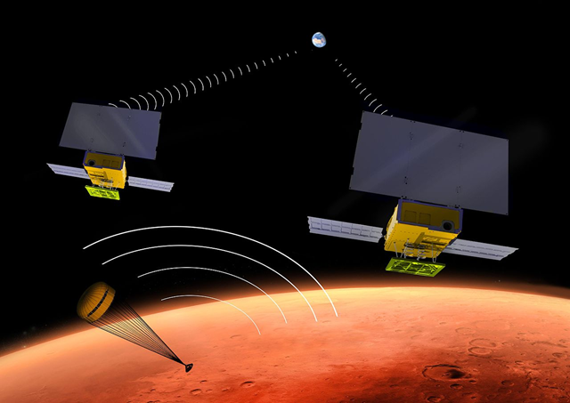

Etape 3 : Transmission des données
En parallèle d’Insight, la NASA a déployé 2 CubeSats 6U nommés MarCO-A et MarCO-B, comme démonstrateurs technologiques. Ils ont servi de relais entre Insight et la Terre durant la phase de descente.

Nous allons étudier rapidement le bilan de liaison donné par le JPL pour ce système. Voici selon le JPL les informations du budget de liaison Mars-Terre des satellites MarCO :
| Paramètre | Valeur |
|---|---|
| Distance émetteur-récepteur | 160 millions de km |
| Fréquence émise | 7,16 GHz |
| Puissance émise | 73 dBm |
| Gain d'antenne en émission | 67 dBi |
| Pertes en émission | 1 dB |
| Gain d'antenne en réception | 9 dBi |
| Pertes en réception | 3 dB |
| Bruit | -170 dB |
- Question 11 : Ecrivez une fonction Python qui prenne ces paramètres en entrée, et calcule le SNR à la réception sur Terre. Quel SNR obtenez-vous pour les valeurs du tableau ? Est-ce un plutôt bon SNR ?
Le JPL indique qu’un débit de 63 bits/s était attendu pour la communication Mars-Terre des CubeSats MarCO.
En faisant l’hypothèse d’un bruit blanc Gaussien, et avec le SNR obtenu à la question précédente :
- Question 12 : Ecrivez une fonction Python qui calcule la largeur de spectre minimum nécessaire pour atteindre un débit donné. Quelle largeur de spectre obtenez-vous pour 63 bits/s ? Est-ce réaliste ?